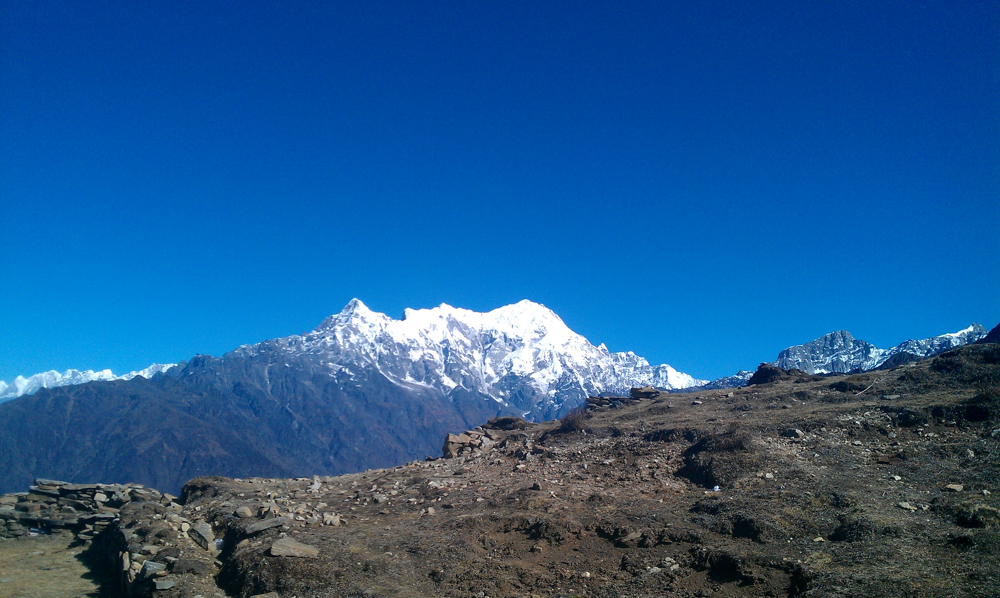
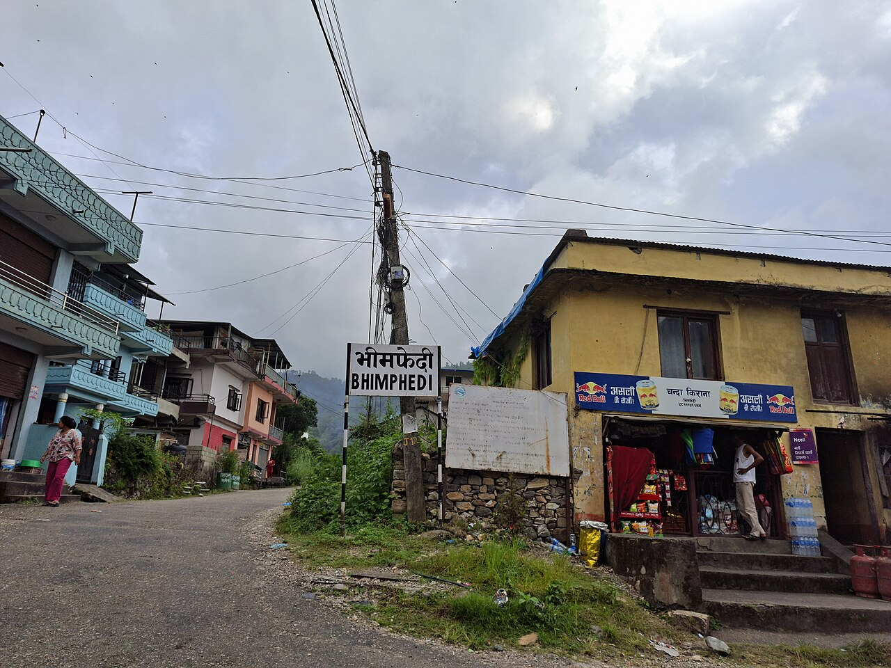
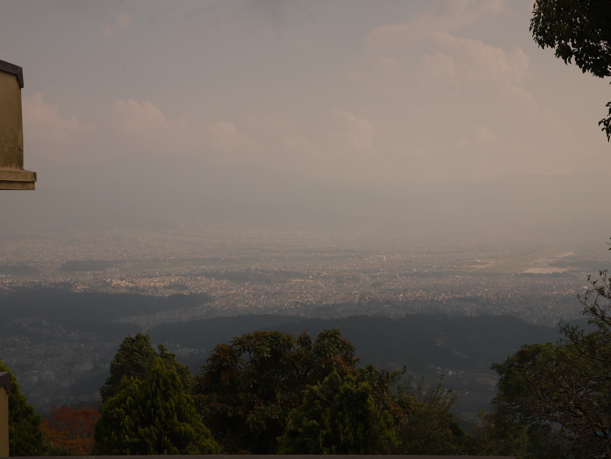

Numbers that explain Nepal and South Asia, told as stories.
Nepal's Data turns public datasets into clear, interactive stories about migration, the economy, democracy, media, and daily life across the region. Every chart is backed by a downloadable dataset and a named source.
Featured story
All stories →
The 26 August flood that drowned northern Nepal
About 1,450 dead and 5,000 missing in Nepal's deadliest flood on record. The wave's journey, the toll, the survivors, and the climate math.
How migrant money reshaped Nepal's economy
Remittances now fund a quarter of Nepal's GDP. A decade of data shows the rise, the pandemic wobble, and where the workers go.
Seven hours down the river
Scroll to follow the 26 August 2026 flood wave from a collapsing mountainside to Devghat, hour by hour, on a living map.
Bullied behind the screen
Cybercrime complaints in Nepal have risen 57-fold in seven years. The data behind the surge, and the teenagers, women, and journalists caught in it.

The killing roads
Nepal loses about seven people a day on its roads, and the official count misses two-thirds of the dying. The Simaltal bus plunge, reconstructed.

Kathmandu and South Asia's air crisis
Kathmandu's 2024 average PM2.5 was nine times the WHO guideline. Annual averages, winter smog, and how the region's capitals compare.
Explore by topic
Migration
Labor permits, remittances, and the absent population.
Economy
Inflation, trade, tourism, and household welfare.
Democracy and elections
Turnout, federalism, and representation across South Asia.
Media freedom
Press freedom rankings, attacks on journalists, censorship.
Digital safety
Internet access, online harms, and child safety policy.
Climate and disasters
Floods, air quality, and a warming Himalaya.